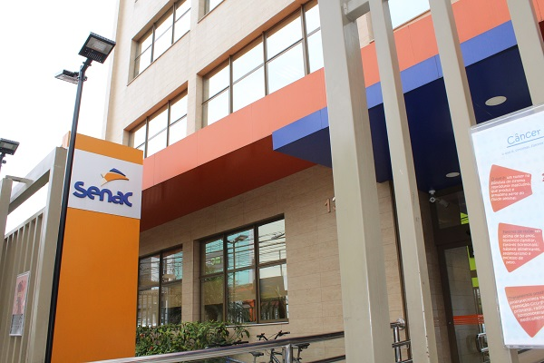
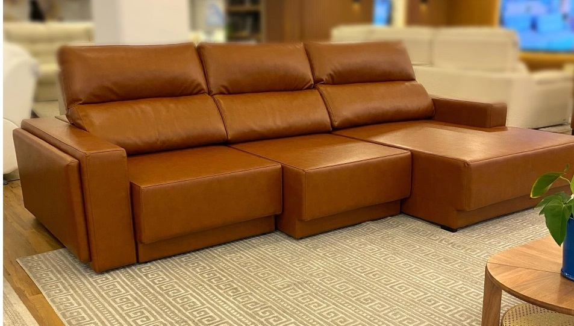

Portifólio
Lucas Vieira da Silva
Programador Dev Jr.
Front-end (jr).
luckas1984quimica@gmail.com
Desenvolvedor front-end (Jr).
Implementação de Design: O desenvolvedor front-end traduz os designs criados pelos designers de interface
(UI) em código. Isso envolve a escrita de HTML, CSS e JavaScript para criar a estrutura, estilo e
interatividade do site ou aplicativo.
Compatibilidade entre Navegadores: Garantir que o site ou aplicativo funcione corretamente em diferentes
navegadores (como Chrome, Firefox, Safari e Internet Explorer) é uma parte importante do trabalho do
desenvolvedor front-end. Isso pode exigir ajustes no código para lidar com diferenças sutis de
renderização entre os navegadores.
Desenvolvedores front-end também são responsáveis por garantir que o site seja responsivo, ou seja, que
seja exibido de maneira adequada em uma variedade de dispositivos e tamanhos de tela, como smartphones,
tablets e computadores desktop.
Desenvolvimento Mobile: Em muitos casos, os desenvolvedores front-end também trabalham em interfaces de
aplicativos móveis, garantindo uma experiência de usuário consistente em dispositivos móveis.
Integração com Back-End: O front-end precisa interagir com o back-end para buscar e enviar dados. Um
desenvolvedor front-end júnior pode precisar integrar APIs (Interfaces de Programação de Aplicações)
fornecidas pelo back-end para garantir a funcionalidade completa do site ou aplicativo.
Testes e Depuração: Identificar e corrigir bugs é uma parte crítica do trabalho de um desenvolvedor
front-end. Testar o código em vários ambientes e dispositivos é fundamental para garantir que o produto
final funcione conforme o esperado.
Aprendizado Contínuo: A tecnologia na área de desenvolvimento front-end está sempre evoluindo. Um
desenvolvedor front-end júnior pode esperar passar uma quantidade significativa de tempo aprendendo
novas tecnologias, frameworks e práticas recomendadas para se manter atualizado.
Colaboração com Equipe: Trabalhar em conjunto com outros desenvolvedores, designers, e, às vezes, equipes
de back-end é comum. A capacidade de colaborar efetivamente é uma habilidade importante.
Formação Acadêmica
Cursos
Escola Senai de Informática Senac-Unidade Guarulhos
_edited.jpg)
Curso de Front-end
O Curso de Qualificação Profissional Programador Front-End é projetado para capacitar os
participantes com habilidades avançadas no desenvolvimento de sistemas, destacando-se na
aplicação das principais tecnologias do front-end. Ao completar o curso, os participantes
estarão aptos a programar sistemas robustos, proporcionando uma experiência visualmente
atraente e amigável aos usuários.
Durante o curso, os alunos explorarão profundamente as tecnologias fundamentais do
front-end, incluindo HTML, CSS e JavaScript, e serão desafiados a aplicar essas habilidades
em projetos práticos e cenários do mundo real. O foco não se limita apenas à codificação; os
participantes aprenderão a considerar as normas, padrões e requisitos técnicos, abrangendo
também aspectos críticos de qualidade, saúde, segurança e sustentabilidade no
desenvolvimento de software.
Conteúdos Adicionais:
Design Responsivo e Usabilidade: Os participantes serão introduzidos aos princípios do
design responsivo, garantindo que os sistemas desenvolvidos ofereçam uma experiência
consistente em uma variedade de dispositivos e tamanhos de tela. A usabilidade efetiva
também será abordada para criar interfaces intuitivas.
Integração de Frameworks Front-End: Exploraremos a integração de frameworks populares, como
React, Vue.js ou Angular, permitindo que os participantes desenvolvam habilidades avançadas
e acompanhem as tendências tecnológicas mais recentes.
Desenvolvimento Orientado a Testes (TDD): Uma abordagem prática ao TDD será incorporada,
ensinando aos alunos a importância de testes de front-end para garantir a estabilidade e
confiabilidade do código.
Otimização de Desempenho: Estratégias eficazes para otimizar o desempenho de aplicações
front-end serão exploradas, incluindo técnicas de carregamento assíncrono, minificação de
código e gerenciamento eficiente de recursos.
Programação do Curso Concluído
- Fundamentos da Tecnologia da Informação e Comunicação - 20h
- Fundamentos da Qualidade e Produtividade - 08h
- Saúde e Segurança no Trabalho - 12h
- Fundamentos da Indústria 4.0 - 12h
- Sustentabilidade nos Processos Industriais - 08h
- Metodologias Ágeis - 12h
- Versionamento - 16h
- Lógica de Programação - 40h
- Codificação para Front -End - 140h
- Interação com APIs - 40h
- Testes de Front-End - 40h
Endereço:
Endereço: Alameda Barão de Limeira, 539 - Santa Cecilia, São Paulo - SP, 01202-001

Graduação em tecnologia da informação para internet.
O curso de Graduação Tecnologia em Sistemas para Internet do Senac EAD capacita os alunos
para desenvolver, manter e otimizar soluções especializadas na utilização eficiente da
internet, atendendo às demandas do mercado. Os estudantes aprendem a projetar, documentar,
implementar e manter sistemas de informação, considerando conceitos de engenharia de
software, linguagens de programação, banco de dados e infraestrutura. Além disso, o curso
abrange a arquitetura e planejamento de aplicações web, com foco na implementação eficaz e
eficiente para usuários, e proporciona habilidades para desenvolver soluções em comércio
virtual, incluindo otimização de desempenho de sistemas. As disciplinas equilibram teoria e
prática, preparando os alunos para aplicar recursos internos nas empresas e contratar
serviços especializados externos.
Programação da Graduação em TI (Cursando).
- Fundamentos da Administração - 72 horas
- Infraestrutura de Tecnologia da Informação - 72 horas
- Tecnologia e Sociedade - 72
- Projeto Integrador: diagnóstico de soluções de tecnologia da informação - 72 horas
- Algoritmos e Programação II - 72 horas
- Análise de Sistemas - 72 horas
- Banco de Dados - 72 horas
- Conceitos de Computação II - 72 horas
- Ética, Cidadania e Sustentabilidade - 72 horas
- Projeto Integrador: desenvolvimento estruturado de sistemas - 72 horas
- Empreendedorismo, Inovação e Economia Criativa - 72 horas
- Layout e Edição de Imagens para Web - 36 horas
- Linguagens de Script para Web - 72 horas
- Programação Orientada a Objetos - 72 horas
- Web Standards - 72 horas
- Projeto Integrador: desenvolvimento de sistemas dinâmicos baseados na web - 72 horas
- Aplicação Web Camadas - 72 horas
- Aplicações Gráficas para Web - 72 horas
- Desenvolvimento de API REST - 72 horas
- Gerenciamento de Projetos - 72 horas
- Linguagens de Servidor - 72 horas
- Projeto Integrador: desenvolvimento de sistemas web modularizável - 72 horas
- Programação para Dispositivos Móveis - 72 horas
- Segurança e Auditoria de Sistemas de Informação - 72 horas
- Single Page Application - 72 horas
- Projeto Integrador: criação de minimum valuable product - 72 horas
Endereço:
Guarulhos Faccini
Rua Luiz Faccini, 132 - Centro
Guarulhos - SP - Cep: 07.110-000
Outras Graduações
Formação em Quimíca Bacharel na Universidade de Guarulhos-UNG
Periodo de 2012 a 2016.
Idiomas
Inglês Técnico
Experiências Profissionais
FlexForm
Com três diretrizes bem demarcadas, a Flexform constrói sua credibilidade no mercado há mais de 57 anos.
Líder nacional na fabricação de cadeiras, tem revolucionado o mercado de cadeiras de escritório desde
sua fundação em 1965. A empresa é pioneira em novas tecnologias e sistemas patenteados como os
mecanismos utilizados em cadeiras operativas: Excêntrico e Universal, utilizados até hoje.
| Data de Início |
Data de Término |
Cargo |
| 05/01/2012 |
30/11/2014 |
Operador de máquina de corte |
O cargo de Cortador de Tecido exige habilidades técnicas e atenção aos detalhes. Além disso, é importante
que os cortadores estejam cientes das tendências da indústria e das necessidades de produção da empresa
em que trabalham. Eles desempenham um papel crítico na produção de roupas e têxteis de alta qualidade.
Clique no link a seguir para visitar o site da FlexForm:
Visite a FlexForm
Plenitude Design

Na Plenitude Design, nossa dedicação é criar sofás de alta qualidade que elevam o conforto e o estilo a
níveis excepcionais. Somos uma empresa especializada na fabricação de sofás, comprometida em oferecer peças
de mobiliário que não apenas aprimoram o ambiente de sua casa, mas também proporcionam uma sensação única de
luxo e conforto.
| Data de Início |
Data de Término |
Cargo |
| 05/02/2018 |
30/11/2023 |
Operador de máquina de corte |
O cargo de Cortador de Tecido exige habilidades técnicas e atenção aos detalhes. Além disso, é importante que
os cortadores estejam cientes das tendências da indústria e das necessidades de produção da empresa em que
trabalham. Eles desempenham um papel crítico na produção de roupas e têxteis de alta qualidade.
Clique no link a seguir para visitar o site da Plenitude Design:
Visite a Plenitude Design
Argumentos válidos
Minha trajetória profissional inclui passagens notáveis em empresas de destaque, com ênfase especial em
minha colaboração na Flexform, de 2012 a 2014, e na Plenitude Design, de 2018 a 2023.
Durante o intervalo entre essas duas experiências marcantes, também contribuí para outras organizações.
Embora essas empresas não tenham desfrutado da mesma notoriedade que a Flexform e a
Plenitude Design, esses períodos desempenharam um papel significativo no meu desenvolvimento
profissional e moldaram meu compromisso com a excelência.
Minha Transição para a Área de Tecnologia
Explorando o Futuro: Minha Transição para a Área de Tecnologia
Em um mundo em constante evolução, reavaliar e adaptar nossa trajetória profissional é uma necessidade
inegável. Como muitos, eu também enfrentei essa jornada de autodescoberta e tomei a emocionante decisão
de mudar para a área de tecnologia nos dias atuais. Esta decisão, que representa uma guinada
significativa em minha carreira, é impulsionada por diversas razões que ecoam as necessidades e
oportunidades da era atual.
1. Inovação Sem Limites
A área de tecnologia é um oceano de inovação. Ela oferece um terreno fértil para explorar ideias
criativas, resolver problemas complexos e criar soluções que impactam diretamente a vida das pessoas. A
capacidade de moldar o futuro por meio de tecnologia é, por si só, uma razão convincente para fazer essa
transição.
2. Adaptabilidade e Resiliência
A tecnologia é a essência da adaptabilidade. Em um mundo em rápida mutação, a capacidade de aprender
constantemente e se adaptar a novas tecnologias e métodos de trabalho é uma vantagem inestimável. A área
de tecnologia me oferece a oportunidade de desenvolver habilidades que são altamente transferíveis e
procuradas no mercado.
3. Abertura de Oportunidades Globais
O setor de tecnologia transcende fronteiras geográficas. A demanda por profissionais de tecnologia está
crescendo em todo o mundo. Isso significa que, ao ingressar nessa área, estou abrindo portas para
oportunidades internacionais e colaborações em escala global.
4. Soluções para Desafios Globais
A tecnologia é uma força poderosa para abordar questões globais prementes, desde a sustentabilidade até a
saúde. Contribuir para projetos que buscam soluções para desafios significativos da humanidade é
profundamente gratificante.
5. Desenvolvimento Pessoal e Profissional
A transição para a tecnologia é uma jornada de aprendizado contínuo. O constante aprimoramento de minhas
habilidades técnicas e a resolução de problemas complexos estimulam meu desenvolvimento pessoal e
profissional de maneira enriquecedora.
Nessa era digital, a tecnologia não é apenas uma indústria, mas uma força motriz que molda o nosso mundo.
Minha decisão de fazer essa transição para a área de tecnologia não é apenas uma escolha de carreira,
mas um compromisso com a construção do futuro, o aprendizado constante e a busca da excelência. Nos dias
atuais, a tecnologia não é apenas o que fazemos, mas quem somos. E é com essa convicção que eu embarco
nessa empolgante jornada.
Veja Portifolio completo